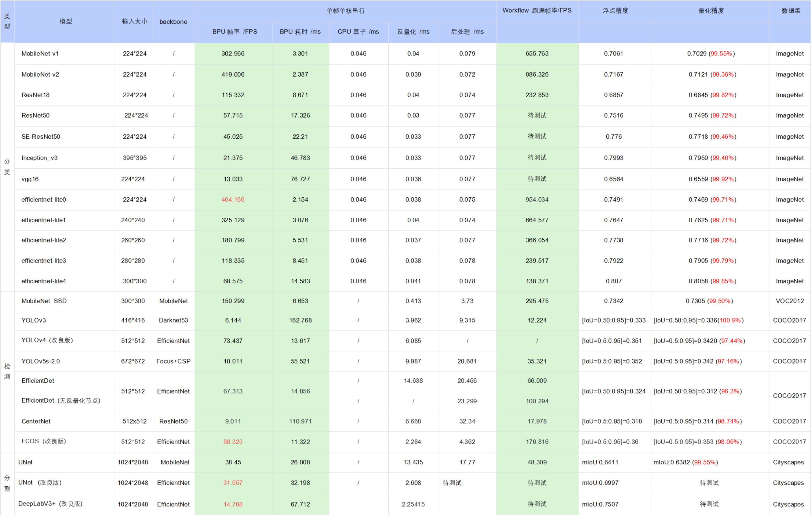

6.5.4.1. 公版模型性能精度指标
下表提供了部分典型开源模型和地平线改良模型在X3M芯片上的性能精度指标。
注意
表格中的数据均为X3M芯片（BPU 1GHz）在开发板端实测的结果（测试模型均来自于 horizon_model_convert_sample 模型示例包），其中：
耗时数据 为单帧单核串行指标（芯片有两个BPU核）
workflow帧率 为双核多线程打满，BPU/CPU 并发的指标
对于 BPU/CPU 混合异构模型，单帧串行下的耗时包括：
输入量化CPU节点 + 模型BPU算子 + 模型CPU算子 + 输出反量化CPU节点 + CPU后处理
输入量化CPU节点：float32->int8，只有 featuremap 输入模型包含，图像输入模型不包含。因为需要遍历数据，所以耗时与 shape 大小成正比
模型CPU算子：
ⅰ. 分类模型尾部的 Softmax 和 Reshape 为 CPU 算子，耗时约 0.046ms
ⅱ. 检测模型均没有 CPU 算子
ⅲ. 分割模型 DeepLabV3+ 尾部的 Argmax 为 CPU 算子
输出反量化CPU节点：int8->float32，耗时同样与 shape 大小成正比
地平线目前支持将 量化/反量化节点手动摘除 ，由用户自行融入前后处理代码中实现，以减少数据重复遍历的损耗，我们已在交付包中提供了 EfficientDet 参考示例，摘除了反量化节点合入后处理，整体性能提升明显（ 66FPS–>100FPS ）
目前地平线示例模型的后处理均未做针对性的性能优化，您可以根据实际需求采用如近似高效实现等优化手段进行代码级加速
在实际应用中， BPU 和 CPU 可以并发运行，提高整体推理速度
若实测性能与上述表格的测试结果不一致，有几个方面可能导致此种情况：
DDR带宽的影响，开发板只能运行ai_benchmark程序。
量化工具链版本与系统镜像版本不完全匹配，最理想的情况是配套使用发布包的量化工具链和系统镜像。
CPU降频影响，目前开发板重启后默认启用自动降频，为了获得最好的性能，您需要在开发板上执行关闭降频命令：
echo performance > /sys/devices/system/cpu/cpufreq/policy0/scaling_governor。